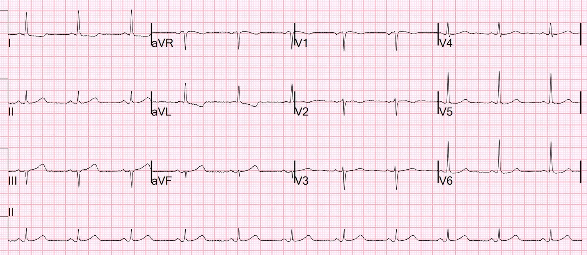
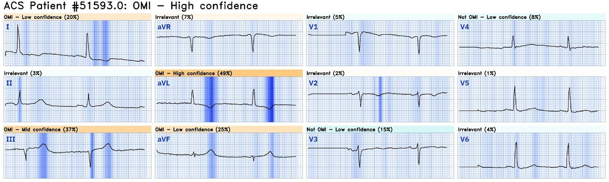
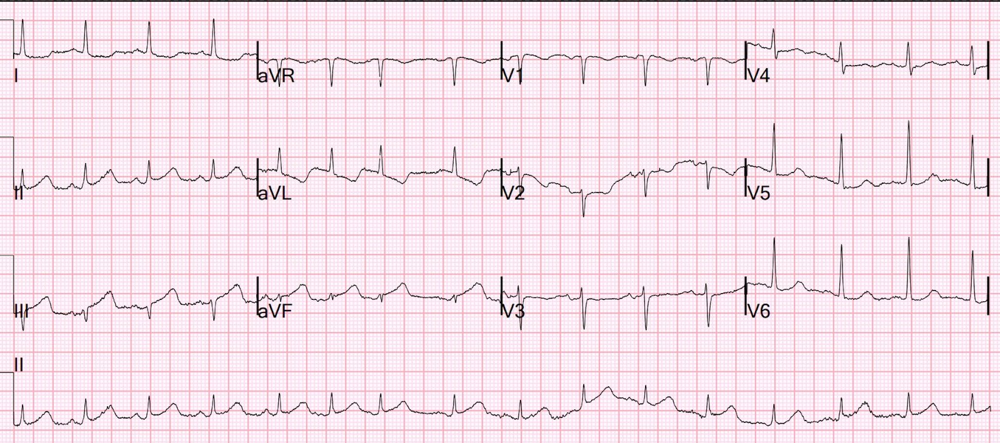
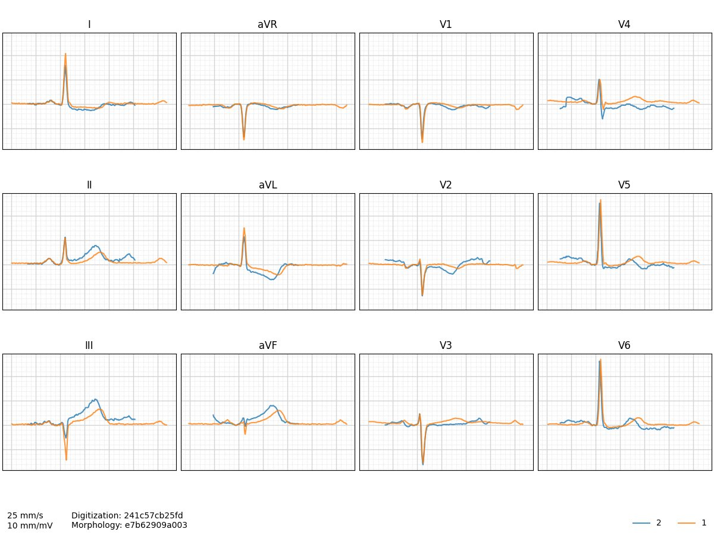
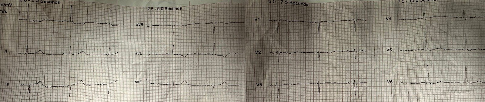
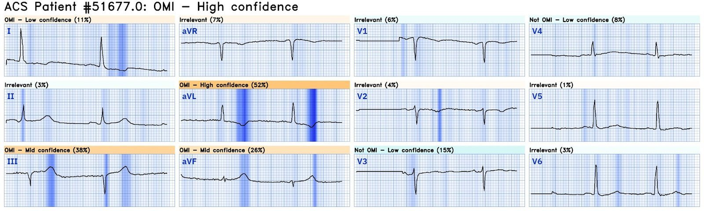
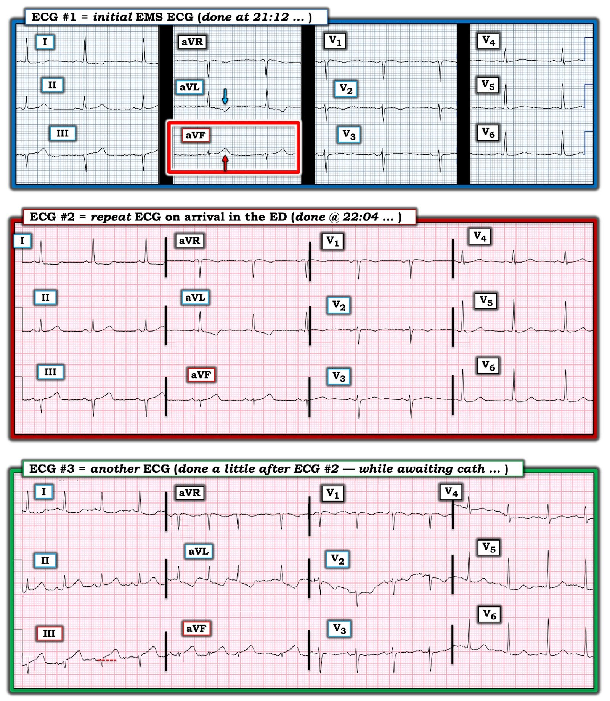

23/07/2024 — Một điện tâm đồ trước viện ở bệnh nhân đau ngực. Nhân viên cấp cứu ngoài viện bảo tôi rằng nó bình thường.
Bản dịch tiếng Việt của bài "A prehospital ECG in a patient with chest pain. The paramedics tell me it is normal." – Dr. Smith’s ECG Blog. Giữ nguyên toàn bộ 9 hình ảnh của bản gốc.
Tôi đang làm việc ở khu phân loại (triage) thì nhân viên cấp cứu ngoài viện đưa tới bệnh nhân này, 65 tuổi, đau ngực đã 12 giờ.
Họ đã ghi một điện tâm đồ trước viện lúc 2112 và nói rằng nó “bình thường”. Tờ điện tâm đồ đã bị vò nhàu và vứt vào sọt rác.
Vì vậy tôi vuốt phẳng nó ra:

Bạn nghĩ gì?
Tôi nghi ngờ OMI thành dưới và thành sau (sóng T lớn ở aVF, ST chênh lên nhẹ ở chuyển đạo III kèm sóng T đảo ngược ở aVL, và ST hơi dốc xuống kèm sóng T âm ở V2, cùng ST chênh xuống tối thiểu ở I, V5 và V6).
Tuy nhiên, theo tôi những dấu hiệu này rất tinh tế và chưa có giá trị chẩn đoán. Nhưng cũng rất đáng ngờ.
Tôi ghi ngay một điện tâm đồ lúc phân loại (triage) khi bệnh nhân vừa tới, lúc 2204, 52 phút sau bản đầu tiên (thời gian vận chuyển trước viện dài):


Bạn nghĩ gì?
Tôi cho rằng bản này gần như đã đủ chẩn đoán, nhưng vẫn chưa chắc chắn và tôi muốn biết Queen of Hearts nghĩ gì:


Nếu Queen nói OMI với độ tin cậy cao và tôi đang lo, thì tôi RẤT lo.
Tôi đưa bệnh nhân vào khu hồi sức cấp cứu và hỏi thêm trên đường đi. Cơn đau lúc có lúc không cho tới một giờ trước khi tới viện, khi đó ông gọi 911.
Chúng tôi kích hoạt phòng thông tim.
Một điện tâm đồ khác được ghi trong lúc chờ kíp thông tim:


Giờ thì đã có STEMI
Dưới đây là hai điện tâm đồ tại khoa cấp cứu, ở định dạng nhát bóp trung vị (nhát bóp “trung bình”), chồng lên nhau (màu cam là bản thứ nhất, màu xanh là bản thứ hai):


Hãy xem lại bản đầu tiên đó (điện tâm đồ trước viện):


Rất tinh tế!
Ngày hôm sau tôi tự hỏi Queen sẽ nói gì:


OMI với độ tin cậy cao!!
Troponin I lần đầu có kết quả 7 ng/L
Bệnh nhân được chụp mạch vành và có tắc RCA (dòng chảy TIMI-0).
Động mạch được mở thông và đặt stent.
Troponin đỉnh là 7000 ng/L (vì can thiệp được thực hiện rất nhanh)!!
Nếu nhân viên cấp cứu ngoài viện có Queen, OMI đã được chẩn đoán sớm hơn 52 phút. Đây là một buổi tối muộn cuối tuần, nên kíp thông tim cần thời gian để tới bệnh viện.
Kích hoạt trước viện lẽ ra đã tiết kiệm rất nhiều thời gian và hoàn toàn khả thi nếu nhân viên cấp cứu ngoài viện dùng ứng dụng AI Queen of Hearts PMCardio.
Click here to sign up for Queen of Hearts Access (Bấm vào đây để đăng ký quyền truy cập Queen of Hearts)

===================================
BÌNH LUẬN CỦA TÔI, bởi KEN GRAUER, MD (23/7/2024):
===================================
Ca hôm nay minh họa tầm quan trọng của việc chú ý tới những dấu hiệu tinh tế trên các điện tâm đồ liên tiếp.
- Để cho rõ, trong Hình 1 — tôi đã ghép 3 bản ghi của ca hôm nay lại với nhau.


Điện tâm đồ Ban đầu trong Hình 1:
Bệnh nhân trong ca hôm nay là một người đàn ông 65 tuổi bị CP (đau ngực – Chest Pain) trong 12 giờ trước đó trước khi liên hệ đội cấp cứu ngoài viện (EMS). Như Dr. Smith đã nêu, dù điện tâm đồ ban đầu đã được đọc là “bình thường” — nó rõ ràng đáng ngờ OMI.
- Nhịp ở điện tâm đồ #1 là nhịp xoang — với các khoảng bình thường; trục mặt phẳng trán bình thường (nằm ngang) — và không có lớn buồng tim.
- Khó xác định chuyển đạo III là phức bộ QS hay rS. Dù vậy — ngay cả khi đây là phức bộ QS, một sóng Q đơn độc ở chuyển đạo III không nhất thiết là bất thường. Không có sóng Q nào khác.
- Tăng tiến sóng R bình thường — với vùng chuyển tiếp (nơi sóng R trở nên cao hơn độ sâu của sóng S) xảy ra bình thường giữa V3 và V4.
Những điểm tinh tế ở điện tâm đồ #1 nằm ở việc đánh giá thay đổi ST-sóng T:
- Ở một bệnh nhân có CP mới trong 12 giờ qua — “mắt” tôi lập tức bị hút về chuyển đạo aVF (trong hình chữ nhật ĐỎ ở điện tâm đồ #1). Xét kích thước rất nhỏ của phức bộ QRS ở chuyển đạo này — sóng T ở aVF rõ ràng là tối cấp (Sóng T này cao vượt hẳn sóng r nhỏ xíu ở aVF — và có thể dễ dàng “nuốt trọn” QRS trong lòng nó).
- Dù không lớn bất tương xứng đến mức như sóng T ở aVF — sóng T ở chuyển đạo III trông “đồ sộ” hơn mức tôi mong đợi so với QRS ở chuyển đạo này.
- Trong bối cảnh ST-T rõ ràng bất thường ở III và aVF — sóng T đảo ngược ở chuyển đạo aVL phù hợp với một thay đổi soi gương (reciprocal) (Tuy bản thân sóng T đảo ngược không nhất thiết là bất thường ở aVL — độ sâu của sóng T ở đây lớn bất tương xứng so với chiều cao khiêm tốn của sóng R ở aVL, vốn còn xa mới đạt tiêu chuẩn LVH).
- Trong bối cảnh các chuyển đạo III, aVL và aVF bất thường — đoạn ST dẹt kèm chênh xuống nhẹ ở chuyển đạo I củng cố tính xác thực của thay đổi soi gương ở aVL.
- Cuối cùng — có ST-T dẹt không đặc hiệu khắp các chuyển đạo trước tim. Tự bản thân nó — dấu hiệu này không chỉ ra điều gì cấp tính. Nhưng trong bối cảnh các dấu hiệu ở chuyển đạo chi nêu trên gợi ý OMI thành dưới (khởi phát vào một thời điểm nào đó trong suốt 12 giờ đau ngực của bệnh nhân này) — việc thiếu sóng T dương cùng với ST chênh lên nhẹ dốc lên phù hợp với OMI thành sau, vốn rất thường đi kèm OMI thành dưới.
- ĐIỀU CỐT LÕI: Như Dr. Smith đã nêu — tuy chưa có giá trị chẩn đoán, những dấu hiệu tinh tế trên ở bệnh nhân đau ngực kéo dài liên tục nhiều giờ này phải được xem là rất đáng ngờ OMI dưới-sau cho tới khi chứng minh được điều ngược lại.
Giá trị của các bản ghi Liên tiếp:
Do thời gian vận chuyển kéo dài — điện tâm đồ ghi lại mãi tới 52 phút sau ( = điện tâm đồ #2) mới được ghi.
- Điểm MẤU CHỐT: Cách so sánh tối ưu các bản ghi liên tiếp là xem từng chuyển đạo một trong khi đặt hai bản ghi ngay cạnh nhau! Nếu xem riêng từng bản ghi — thì quá dễ bỏ sót những khác biệt tinh tế.
- Việc so sánh điện tâm đồ #1 và điện tâm đồ #2 trong ca hôm nay cũng vậy. Khi nhìn hai bản ghi cạnh nhau (như chúng tôi làm trong Hình 1) — tôi nghĩ có sự gia tăng tinh tế nhưng có thật về tính tối cấp ở điện tâm đồ #2 — ở chỗ các đoạn ST thẳng hơn, với “thể tích” sóng T lớn hơn một chút (nhưng nhất quán) ở các chuyển đạo II,III,aVF và aVL.
- Dù những thay đổi nhẹ về hình dạng ST-T ở chuyển đạo trước tim trên điện tâm đồ #2 vẫn không đặc hiệu — ở bệnh nhân này, người mà chúng ta nghi ngờ mạnh OMI thành dưới — không còn nghi ngờ gì rằng đoạn ST chênh lên nhẹ ở điểm J, dốc lên thoai thoải, vốn bình thường thấy ở V2,V3 đã không còn.
- ĐIỀU CỐT LÕI: Như Dr. Smith đã nêu — cần kích hoạt phòng thông tim.
Điện tâm đồ Cuối cùng:
Điện tâm đồ cuối cùng trong ca hôm nay được ghi trong lúc chờ thông tim.
- Tần số tim ở điện tâm đồ #3 đã tăng — kèm một số PAC.
- Như đường chấm ĐỎ cho thấy — giờ đã có ST chênh lên rõ ở chuyển đạo III, cũng như ở các chuyển đạo thành dưới khác. Đối lại là thay đổi ST-T soi gương , với mức điểm J chênh xuống tăng lên ở chuyển đạo aVL.
- Dù khó đánh giá vì nhiễu kèm trôi đường nền — giờ dường như có ST chênh xuống dạng bậc thềm ở chuyển đạo V2, phù hợp với OMI thành sau đang diễn ra.
- Điểm MẤU CHỐT : Như Dr. Smith đã nêu — các thay đổi trên điện tâm đồ liên tiếp ở 2 bản ghi đầu của ca hôm nay cực kỳ tinh tế, cho tới khi ST chênh lên rõ ràng cuối cùng xuất hiện ở điện tâm đồ #3. Nhưng trong bối cảnh bệnh sử đáng lo là đau ngực mới khởi phát ở người đàn ông 65 tuổi này — những dấu hiệu tinh tế trên điện tâm đồ #1 và #2 lẽ ra đã đủ để nhận ra nhu cầu thông tim ngay.
- Cách TỐT NHẤT để trở nên giỏi nhận ra những manh mối sớm quan trọng này trên điện tâm đồ — là Quay Lại sau khi bạn đã biết đáp án — để NHÌN LẠI điện tâm đồ #1 — rồi điện tâm đồ #2 — và THẤY những dấu hiệu ban đầu tinh tế này tiến triển thành nhồi máu cơ tim cấp hiển nhiên ở điện tâm đồ #3 như thế nào.